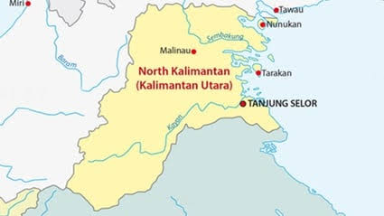
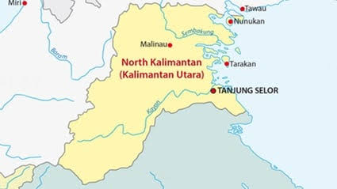
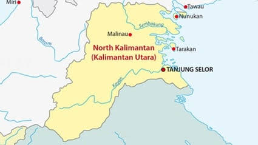
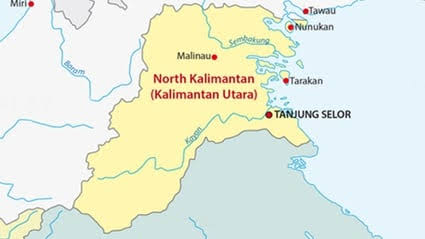

Kepulauan Kalimantan Utara adalah sebuah provinsi di Indonesia yang terletak di bagian utara Pulau Kalimantan. Provinsi ini berbatasan langsung dengan negara tetangga Malaysia, yaitu negara bagian Sabah dan Sarawak. Pusat pemerintahan Kalimantan Utara saat ini berada di Tanjung Selor, yang juga sebagai pusat pemerintahan Kabupaten Bulungan.
sebelum terbentuknya Kesultanan Bulungan, daerah yang sekarang menjadi wilayah provinsi Kalimantan Utara hingga daerah Kinabatangan di Sabah bagian Timur merupakan wilayah mandala negara Berau yang dinamakan Nagri Marancang. Namun belakangan sebagian utara Nagri Marancang (alias Sabah bagian Timur) terlepas dari Berau karena diklaim sebagai wilayah mandala Brunei, kemudian oleh Brunei dihadiahkan kepada Kesultanan Sulu dan Suku Suluk mulai bermukim di sebagian wilayah tersebut.
Wilayah yang menjadi provinsi Kalimantan Utara merupakan bekas wilayah Kesultanan Bulungan. Kesultanan Bulungan menjadi daerah perluasan pengaruh Kesultanan Sulu.
Klik link di sini untuk informasi lebih lengkap.